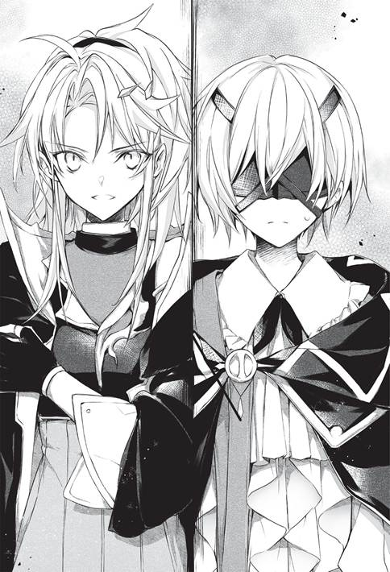
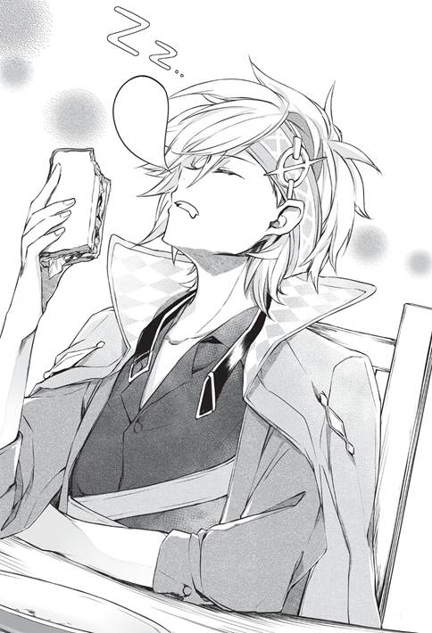

ไม่นานนักหลังจากเหตุการณ์ผกาเทพหายไปสิ้นสุดลง
“—รุ่นพี่คุนอน ไม่เจอกันนานนะคะ”
มีผู้หญิงทักคุนอนเมื่อมาถึงโรงเรียน
เธอคือเซลาลาฟีรา ควอตซ์
เป็นนักเรียนใหม่ที่เข้าชั้นเรียนระดับพิเศษในปีนี้ และเป็นรุ่นน้องคนแรกของคุนอน
เธอมีใบหน้างามได้รูป เส้นผมสีคราม และดวงตาสีน้ำเงิน ทุกอากัปกิริยาดูอ่อนช้อยยิ่งนัก หน้าตาไม่ละม้ายองค์ชายเพลิงคลั่ง จีโอเอริออนเท่าไร แต่เขารู้สึกว่าคล้ายกันอยู่บ้าง
“คุณหนูเซลาลาฟีรา!”
เมื่อเห็นเธอคุนอนก็นึกขึ้นได้ทันที ถึงจะมองไม่เห็นก็เถอะ
ลืมไปเลย
ลืมเรื่องเธอไปเลย
หมู่นี้เขางานยุ่ง อีกทั้งเธอยังเก็บตัวเพื่อ ‘ฝึกฝนเวทมนตร์’ จึงลืมไปเสียสนิท
ทั้งที่จีโอเอริออนไหว้วานมา
เขากลับละเลยเธอไป
จากนั้นจึงบอกเล่าสารทุกข์สุกดิบกันคร่าวๆ
“—เรื่องวิธีหาเงิน”
แล้วเซลาลาฟีราบอกเหตุผลที่มาหาคุนอน
ทั้งสองคนมายังคอฟฟี่ช็อปใกล้โรงเรียน
เพราะพิจารณาว่าจะคุยกันนาน ให้ยืนคุยกันคงไม่ดี
วิธีหาเงิน
อุปสรรคอย่างแรกของชั้นเรียนระดับพิเศษซึ่งสร้างความลำบากให้สตรีศักดิ์สิทธิ์ เพื่อนร่วมรุ่นของเขาในปีก่อน
จากที่ได้ฟังมา ยิ่งเป็นนักเรียนที่ใช้ชีวิตมาอย่างสุขสบายจะยิ่งติดขัดปัญหานี้
ทั้งสตรีศักดิ์สิทธิ์และเซลาลาฟีราต่างอยู่ในสถานะแบบชนชั้นสูงระดับสูง
ต้องลำบากเป็นแน่
—คุนอนผู้ให้คำปรึกษาต้องตั้งใจหน่อย
ในเมื่อรับการไหว้วานมาแล้ว ขืน ‘ล้มเหลว’ ขึ้นมาก็ไม่คงกล้าไปสู้หน้าจีโอเอริออนหรอก
ละเลยมาสักพักแล้วด้วย ปล่อยไว้อย่างนี้ต้องแย่แน่ๆ
หลังสอบถามสถานการณ์ปัจจุบันของเซลาลาฟีราแล้วจึงพูดเข้าประเด็น
ประเด็นคือจะหาเงินได้อย่างไร
ขณะนี้เธอยังไม่มีจำนวนเงินที่ตั้งเป้าไว้ ยิ่งหาเงินได้เยอะก็ยิ่งดี แต่ตอนนี้ขอให้เพียงพอต่อการใช้ชีวิตโดยไม่ลำบาก
คุนอนคิดไว้เล็กน้อย
เรื่องที่ธาตุดินสามารถทำได้
เป็นธาตุเดียวกับอาจารย์เซออนลีย์ จึงจินตนาการได้พอสมควรว่าทำอะไรได้และน่าจะทำอะไรได้บ้าง
“เรื่องแรกที่คิดออกคือเรื่องเกี่ยวกับอัญมณีและโลหะ”
หากพูดถึงธาตุดิน ตัวอย่างเหล่านั้นย่อมผุดขึ้นในหัว
เวทมนตร์พสุธามีความเกี่ยวข้องกับแผ่นดิน
ไม่ว่าจะเป็นดินหรือหินก็ได้รับอิทธิพล
วันที่พบกับเซลาลาฟีราครั้งแรก คุนอนพูดเรื่องพวกนี้ไปแล้ว
เซลาลาฟีราเป็นลูกสาวชนชั้นสูงระดับสูง แม้ว่ายังเป็นเด็กก็น่าจะได้เห็นเครื่องประดับและงานหัตถกรรมมาเยอะ
และเธอเองก็คงจะเป็นเจ้าของหลายชิ้นด้วย
“สามารถออกแบบและประดิษฐ์เองได้ ฟังดูมีเสน่ห์จริงๆ นะ”
—เวทมนตร์พสุธาใช้ทำเครื่องประดับได้
เซลาลาฟีรารู้เรื่องนั้นคร่าวๆ อยู่แล้ว
แต่วันนั้นคุนอนพูดให้ฟังอย่างเป็นรูปธรรม
เช่นเรื่องแหวนที่ชาวจักรวรรดิบางคนครอบครอง หรือเรื่องเชื้อพระวงศ์ของอาณาจักรใหม่จ้างจอมเวทพสุธาฝีมือเยี่ยมไว้เป็นนักออกแบบส่วนตัว
เรื่องเหล่านั้นเป็นตัวอย่างที่เขาเล่าให้ฟัง
มีเครื่องประดับจำนวนหนึ่งที่เซลาลาฟีรารู้จักด้วย
ถึงจะยังเยาว์วัยก็รู้สึกว่าเป็นเครื่องประดับที่งดงาม
นั่นเป็นความรู้สึกที่เด่นชัด จึงจำได้แม่น
เธอไม่นึกเลยว่าเป็นผลงานของจอมเวทพสุธา เล่นเอาตกใจที่จอมเวทสร้างของแบบนั้นได้
“แต่ฉันว่ามีคนทำงานแนวนั้นเยอะเกินไปแล้ว”
เซลาลาฟีราพยักหน้ารับคำคุนอน
“ทุกคนคิดเหมือนกันหมดสินะ”
ถ้าพูดถึงเวทมนตร์พสุธาต้องงานนี้
มันเป็นแนวคิดที่นึกออกได้ง่ายๆ ทุกคนที่มีธาตุดินย่อมคิดเหมือนกัน
ผลลัพธ์คือจอมเวทพสุธาในดีราซิกแย่งงานกันเล็กน้อย
สิ่งที่กำลังพูดถึงคืออัญมณีกับโลหะมีค่า
ไม่ใช่สิ่งที่ขายได้ตลอด และขายราคาถูกไม่ได้
ดังนั้นจึงมีงานให้ทำไม่มากนัก
งานฝีมือโลหะก็เช่นกัน
อัตราการแข่งขันของงานนั้นสูงยิ่งขึ้นไปอีก
ถ้าฝีมือดีคงขายได้—แต่ยากที่จอมเวทพสุธาหน้าใหม่จะหาเงินได้ทันที
“งานก่อสร้างน่าจะมีความต้องการอยู่ แต่ดูเหมือนรายได้ค่อนข้างต่ำ”
“และน่าจะมีแต่งานระยะสั้นนะคะ”
หมายความว่าแก้ปัญหาเฉพาะหน้าได้เท่านั้น
เซลาลาฟีราต้องใช้ชีวิตอยู่ที่นี่อีกหลายปี
ถ้าเป็นไปได้ควรทำงานระยะยาวมากกว่า
หากพูดถึงอุดมคติแล้ว อยากทำงานสบาย รายได้สูง ใช้เวลาน้อย
อาจจะหวังสูงไปหน่อย—แต่คุนอนและนักเรียนของชั้นเรียนระดับพิเศษส่วนใหญ่ทำแบบนั้นได้จริง
ใช่ว่าจะเป็นความหวังที่เป็นไปไม่ได้
ทั้งสองนั่งคุยกันในคอฟฟี่ช็อปเป็นเวลานาน
ถกกันไปต่างๆ นานา
แต่หาข้อสรุปไม่ได้สักที
“อาจารย์ของฉันอาศัยอุปกรณ์เวทหาเงินได้ แต่ก็ไม่ใช่งานที่หาเงินได้ในทันที”
อันดับแรก เซลาลาฟีราไม่มีความรู้พื้นฐานเรื่องอุปกรณ์เวท
ไหนจะเรื่องของความสามารถอีก
การหาเงินให้ได้ทันทีในแนวทางนี้คงเป็นเรื่องยาก
“ถึงจะค้นพบสายแร่ทอง เงิน หรืออัญมณี แต่เจ้าของที่ดินย่อมแสดงสิทธิครอบครองอยู่ดี”
ในเวทมนตร์พสุธามีเวทมนตร์ค้นหาโลหะที่ฝังอยู่ใต้ดินด้วย
คงสามารถค้นหาได้
แต่ถึงค้นพบก็ไม่ได้หมายความว่าจะได้เป็นของตน
“เรื่องงานฝีมือนั้นโดนคนมีฝีมือผูกขาดงานเอาไว้น่ะ”
“มีคนเก่งขนาดขายตรงให้ชนชั้นสูงด้วยใช่ไหม มือสมัครเล่นเข้าไปทำก็ไม่ได้อะไร...”
สำหรับการสร้างเครื่องมือเครื่องใช้
เป็นงานเล็กๆ น้อยๆ ที่สามารถทำได้ทันที
แต่ยากที่จะหาเงินได้อย่างต่อเนื่อง ค่าตอบแทนย่อมไม่สูงนัก
ที่สำคัญที่สุด
“ติดขัดตรงที่ฝีมือดิฉันยังไม่ดีพอ...”
ตอนนี้เซลาลาฟีราเพิ่งเข้าชั้นเรียนระดับพิเศษ
ความสามารถยังไม่มากนัก
พูดง่ายๆ คือเรื่องที่เซลาลาฟีราทำได้ จอมเวทคนอื่นก็ทำได้เหมือนกัน
พอคิดแบบนั้น ถึงจะคิดงานแหวกแนวได้ก็คงโดนแย่งงานในทันที
งานสบาย รายได้สูง ใช้เวลาน้อย
ใครๆ ก็อยากทำงานแบบนั้นอยู่แล้ว
“รุ่นพี่คุนอนไม่มีปัญหาเหรอคะ เป็นงานที่ช่วยให้นอนหลับสินะ ไม่โดนแย่งงานบ้างเหรอ...”
“ตอนนี้ยังไม่มีเลย”
คุนอนหาเลี้ยงชีพด้วยเวทมนตร์ที่มีแต่เขาที่ใช้ได้
“ต่อให้งานนั้นล่มก็ไม่เป็นไร ฉันคิดงานอื่นไว้แล้ว”
ไม่มีวี่แววว่าจะโดนใครแย่ง และต่อให้โดนแย่งก็คิดวิธีต่อไปเผื่อไว้แล้ว
“งั้นเหรอคะ...รุ่นพี่ในชั้นเรียนระดับพิเศษเก่งกาจกันทั้งนั้นเลย”
นักเรียนคนอื่นในชั้นเรียนระดับพิเศษต้องเหมือนกันแน่ๆ
ทำงานสบาย รายได้สูง ใช้เวลาน้อย ด้วยเรื่องที่ทำได้เพียงคนเดียว
“...”
“...”
หลังจากแลกเปลี่ยนความคิดเห็นต่างๆ นานา
ทั้งคู่พากันครุ่นคิดเงียบๆ
ชาที่สั่งมานั้นผิวหน้านิ่งสนิทและเย็นชืดไปแล้ว
เมื่อถึงตอนที่ไม่รู้จะพูดอะไรต่อ
“...ฉันนึกอะไรขึ้นมาได้เรื่องหนึ่ง”
คุนอนอ้าปากพูด
“สิ่งสำคัญคือการรักษาความลับ คุณหนูเซลาลาฟีราน่าจะเข้าใจความสำคัญของสัญญาสินะ”
แม้จะถามด้วยน้ำเสียงสบายๆ แต่คำพูดมีความหมายใหญ่หลวง
สังคมชนชั้นสูงให้ความสำคัญกับสัญญา
ผู้ละเลยเรื่องนี้มีอันต้องล่มจม
“ค่ะ ดิฉันรักษาความลับอยู่แล้ว ปิดปากสนิทยิ่งกว่าทากาวติดเอาไว้อีกค่ะ”
—คุนอนคิดว่าถ้าอย่างนั้นก็วางใจได้
ถูกใจคำเปรียบเปรยที่ว่าทากาวติดเอาไว้ด้วย
รู้สึกเหมือนตนเคยพูดลักษณะเดียวกันมาก่อน
“งั้นเราไปกันเถอะ เดี๋ยวจะแนะนำให้รู้จักใครบางคน”
“ใครบางคน? คุณพ่อคุณแม่ของรุ่นพี่คุนอนเหรอ”
“เพื่อนร่วมรุ่นของฉันต่างหาก”
แผนการของเพื่อนร่วมรุ่นน่าจะยังไม่เริ่มต้น
แต่นี่อาจเป็นแรงส่งให้เริ่มต้นก็ได้
“เอาไว้เจอพ่อแม่ฉันโอกาสหน้าเถอะ ขืนพาสุภาพสตรีแสนสวยอย่างคุณหนูไปแนะนำให้รู้จักกะทันหัน มีหวังตกใจจนเข่าอ่อนแน่”
—ในเมื่อคนที่พาไปแนะนำให้รู้จักแบบสบายๆ คือลูกสาวตระกูลควอตซ์อันมีชื่อเสียงในจักรวรรดิเออร์เซียน
คงตกใจด้วยเหตุผลอื่นมากกว่า
“สวัสดี คุณหนูเรเยส”
พวกคุนอนออกจากคอฟฟี่ช็อปแล้วไปยังโรงเรียน
ที่หมายคือห้องเรียนของสตรีศักดิ์สิทธิ์
“สวัสดี คุนอน คนนั้นใครเหรอ”
มีพืชอยู่เต็มห้องเรียน สตรีศักดิ์สิทธิ์อ่านหนังสืออยู่ท่ามกลางพืชเหล่านั้น
ดูเป็นภาพที่งดงามดี
นี่คือสภาพตามปกติของเธอและที่อยู่ของเธอซึ่งเห็นจนเจนตา
“—ยินดีที่ได้รู้จักค่ะ ฉันชื่อเซลาลาฟีรา”
เมื่อแนะนำตัวเสร็จ
“คุณหนูเรเยส เรื่องนั้นคืบหน้ารึเปล่า”
“เรื่องไหน”
สตรีศักดิ์สิทธิ์ผู้ไม่ค่อยมีอารมณ์ฟังคำพูดอ้อมค้อม
ฉะนั้นต้องพูดแบบตรงไปตรงมา
“เรื่องที่อยากสร้างเรือนกระจกไง”
“ยังไม่คืบหน้าเลย ถ้าหาจอมเวทพสุธาที่รักษาความลับได้ก็อยากดำเนินการทันที...เธอตั้งใจจะให้เซลาลาฟีราทำหน้าที่นั้นเหรอ”
“นั่นเป็นเหตุผลที่พามา เธอจ่ายค่าตอบแทนได้รึเปล่า”
“เรื่องเงินฉันพอมี ค่าตอบแทนคือสองล้านเน็กกา เริ่มงานจ่ายห้าแสนเน็กกา และจ่ายอีกหนึ่งล้านห้าแสนเน็กกาเมื่องานเสร็จสิ้น
“หลังจากนั้นจะจ่ายให้เดือนละสองแสนเน็กกาเป็นค่าบำรุงรักษา”
ในช่วงเดียวกันนี้เมื่อปีก่อน
สตรีศักดิ์สิทธิ์กลุ้มใจเรื่องเงินทองเช่นเดียวกับเซลาลาฟีรา
แต่เวลานี้ประสบความสำเร็จในการค้าขายเกี่ยวกับสมุนไพรวิญญาณซิ ซิลลา แล้ว
เธอใช้ชีวิตได้อย่างสบาย แถมยังออมเงินได้
แตกต่างจากตอนนั้น
แตกต่างจากเธอในสมัยที่ยังประทังความหิวด้วยเบคอนที่ทำพลาด แตกต่างจากสตรีศักดิ์สิทธิ์ในสมัยที่ทนกินของใช้ไม่ได้ด้วยน้ำตาคลอเบ้า
แต่ก็ทำให้รู้สึกอ้างว้างนิดหน่อย
“เอ่อ...หมายความว่าจะให้ดิฉันสร้างเรือนกระจกงั้นเหรอ”
เซลาลาฟีราว้าวุ่น
เรือนกระจกเป็นสิ่งก่อสร้าง
แม้จะพูดง่ายๆ ว่าอยากสร้างเรือนกระจก แต่การก่อสร้างทั่วไปในยุคปัจจุบันต้องอาศัยการคำนวณอย่างถี่ถ้วน
แล้วเซลาลาฟีราซึ่งเป็นมือสมัครเล่นด้านการก่อสร้างจะไปสร้างได้อย่างไร...
“ดิฉันไม่น่าจะทำได้นะ...”
เธอไม่มั่นใจ
ความสามารถต้องไม่เพียงพอแน่ๆ
และไม่มีเวลาที่จะเริ่มเรียนรู้วิธีก่อสร้างตอนนี้ ค่าครองชีพต้องหมดลงก่อนสร้างเรือนกระจกอย่างแน่นอน
ต่อให้เรียนรู้ได้
เธอก็ไม่แน่ใจอยู่ดีว่าจะสร้างได้ทันทีหรือไม่
อาจสร้างได้แค่เปลือกนอก เธอไม่น่าจะสร้างให้ใช้งานได้จริง
“ฉันต้องการให้สร้างเรือนกระจกก็จริง แต่ไม่ใช่เรือนกระจกธรรมดานะ”
สตรีศักดิ์สิทธิ์พูดกับเซลาลาฟีราที่กำลังว้าวุ่น
“เป็นเรือนกระจกลับใต้ดิน”
“เอ๋? ตะ...ใต้ดิน?”
“ใช่แล้ว ฉันอยากสร้างเรือนกระจกลับใต้ดินของฉันคนเดียว”
เรือนกระจกลับใต้ดิน
คำพูดนั้นทำให้คุนอนกับเซลาลาฟีรารู้สึกตื่นเต้น
แค่มีคำว่า ‘ลับ’ ก็สร้างความฉงนสงสัยอย่างแรง
พื้นที่ปิดกั้นใต้ดิน
ไม่อาจปฏิเสธได้ว่าทำให้ระทึกใจเล็กน้อย
แม้จะคิดว่า...ไม่น่าเป็นไปได้สำหรับสตรีศักดิ์สิทธิ์
แต่ก็เตรียมใจว่าต่อจากนี้อาจได้ฟังเรื่องเหลือเชื่อ
“ฟังดูเหมือนเรื่องล้อเล่น แต่มีความจำเป็นให้ต้องทำ”
สตรีศักดิ์สิทธิ์ทำตัวตามปกติ ไม่ทันได้สังเกตความตื่นเต้นของทั้งสองคนเลย
เธอพูดต่อเหมือนไม่ใช่เรื่องใหญ่
“พื้นที่เพาะปลูกไม่พอแล้วน่ะ”
เธอกวาดตามองไปรอบห้อง
กระถางเรียงรายกันอย่างแออัด ปลูกพืชเขียวชอุ่มไว้
สมุนไพรวิญญาณซิ ซิลลา อันเป็นแหล่งทำเงินให้เธอก็ปลูกไว้มากกว่าสองเท่าของปีก่อน
แบบนี้ย่อมออมเงินได้อยู่แล้ว
“พืชทั้งหมดที่นี่ล้วนแล้วแต่ล้ำค่ามีราคาพอสมควร แต่ยากที่จะเพิ่มจำนวนไปมากกว่านี้”
พอฟังถึงตรงนี้คุนอนก็เข้าใจ
“อย่างนี้นี่เอง พื้นที่เพาะปลูกเหรอ”
—แค่เรื่องง่ายๆ ว่าไม่มีพื้นที่เพาะปลูกแล้ว
ตอนนี้ปลูกสมุนไพรวิญญาณซิ ซิลลา ไปจนถึงสมุนไพรที่หายากชนิดอื่นๆ บรรดาพืชที่อยู่ในนี้ต่อให้ขายทิ้งแบบขาดทุนก็ไม่น่าจะต่ำกว่ายี่สิบล้าน
มีพืชล้ำค่าเกินกว่าจะปลูกริมสวนในบ้านเช่าเยอะเกินไป
ของมีค่าขนาดนี้ต้องโดนผู้ร้ายหมายตาแน่
ฉะนั้นเลยต้องการพื้นที่เพาะปลูกใหม่
และทางเลือกหนึ่งคือพื้นที่ใต้ดินนั่นเอง
คุนอนได้ยินจากสตรีศักดิ์สิทธิ์เพียงแค่ ‘อยากได้เรือนกระจก’
แต่นั่นไม่ใช่ความต้องการอันคลุมเครือ เธอมีเป้าหมายแน่ชัดอยู่แล้ว
—ถ้าเธอบอกว่าอยากได้เรือนกระจกธรรมดา คุนอนก็ตั้งใจว่าจะช่วยเหลือเซลาลาฟีราในการสร้างเรือนกระจก ถ้าเป็นเรื่องยากก็จะขอความร่วมมือจากอาจารย์ที่พึ่งพาได้ เพื่อเป็นการแนะนำให้รู้จักกับเซลาลาฟีราด้วย
เขาคิดว่าเรื่องนั้นน่าสนุกดี
แต่อยู่ใต้ดินสินะ
“ขอยืมใช้ห้องเรียนใหม่จากทางโรงเรียนก็ได้ไม่ใช่เหรอ”
“ตอนแรกฉันตั้งใจอย่างนั้นเลยไปปรึกษาดู แต่แถวนี้ไม่มีห้องเรียนว่างแล้ว ฉันเสียดายเวลาในการเคลื่อนย้าย ดังนั้นถ้าอยู่ใกล้ได้น่าจะดีที่สุด
“แต่พอคิดดูดีๆ ก็นึกขึ้นได้ว่าไม่จำเป็นต้องมีพื้นที่เพาะปลูกภายในโรงเรียน”
—สตรีศักดิ์สิทธิ์คิดถึงสถานการณ์ของตนพลางพูดต่อไป
ในสวนของบ้านที่อาศัยอยู่ตอนนี้เต็มไปด้วยพืช
ไม่ว่าจะทำอย่างไรก็ยากที่จะปลูกเพิ่ม
แถมยังวางเกลื่อนอยู่ในบ้านจนคนรับใช้ถึงกับบ่นซ้ำๆ ว่า “พอทีเถอะ...”
อีกทั้งคนรับใช้ยังปฏิเสธความต้องการที่จะย้ายไปอยู่บ้านที่กว้างขวางขึ้นด้วย
พระสันตะปาปาแห่งรัฐศาสนาเซนทรานส์ซึ่งเป็นมาตุภูมิถึงกับส่งจดหมายมาบอกเองว่า ‘ห้ามทำให้คนรับใช้ลำบากใจ’ เจ้าตัวจึงต้องยอมตัดใจทั้งเรื่องปลูกเพิ่มและเรื่องย้ายบ้าน
สตรีศักดิ์สิทธิ์เองก็ไม่อยากทิ้งพืชที่มีอยู่เพื่อไปปลูกต้นใหม่
ดังนั้นจึงหมายตาพื้นที่ใต้ดิน
น่าจะลองสร้างห้องที่ใต้ดินของสวนและปลูกพืชที่นั่น
เธอได้แนวคิดเช่นนั้นมา
แบบนั้นคงไปทุกวันได้อย่างสบาย แถมยังดูแลเองได้ ไม่ต้องสร้างภาระให้คนรับใช้
“ระยะหลังฉันถูกไหว้วานให้เพาะปลูกสมุนไพรและพืชอย่างลับๆ มากขึ้น เนื่องจากต้องรักษาความลับให้ผู้ไหว้วาน เลยอยากได้สถานที่เพาะปลูกที่ไม่มีใครรู้น่ะ”
สำหรับเรื่องห้องใต้ดิน พวกคนรับใช้ยินยอมแล้ว
งานอดิเรกของสตรีศักดิ์สิทธิ์มีผลประโยชน์
ที่สำคัญยังเกี่ยวข้องกับงาน
แถมตอนนี้ยังมีความต้องการให้นำเข้าสมุนไพรวิญญาณและสมุนไพรจากรัฐศาสนา นอกจากคำไหว้วานให้เพาะปลูกแล้วยังมีการค้นคว้า จึงจำเป็นต้องมีพื้นที่เพาะปลูกใหม่
แต่พูดเรื่องพวกนั้นไม่ได้หรอก
เธอจำเป็นต้องบอกเหตุผลกับคุนอนและเซลาลาฟีราก็จริง แต่ต่อไปนี้จะยอมบอกเฉพาะผู้มีส่วนเกี่ยวข้องเท่านั้น
ทั้งเรื่องเรือนกระจกและเรื่องที่จะทำที่นั่น
ดังนั้นจึงต้องให้ทั้งคู่ช่วยเก็บงำเอาไว้
ถือเป็นความลับ
“เรื่องที่จำเป็นคือการขุดหลุม ปรับหน้าดินให้เรียบและมั่นคง
“ได้ยินว่าเวทมนตร์พสุธาง่ายๆ ก็ทำเรื่องพวกนี้ได้”
เวทมนตร์พสุธาส่งผลต่อดิน
การเจาะรูบนหินเป็นเรื่องยาก แต่การเจาะรูบนดินเป็นเรื่องง่าย
ส่วนการปรับหน้าดินให้เรียบและมั่นคงเป็นเวทมนตร์ขั้นต้นอยู่แล้ว
“ฉันถามคุนอนไปว่า ‘มีจอมเวทพสุธาฝีมือพอสมควรที่เชื่อใจได้และไม่ปากสว่างบ้างรึเปล่า’ เพราะอยากให้แนะนำใครสักคนให้หน่อย”
ใช่แล้ว สตรีศักดิ์สิทธิ์พูดแบบนั้นจริงๆ
ดังนั้นคุนอนจึงพาเซลาลาฟีรามา
—ท้ายที่สุดสตรีศักดิ์สิทธิ์ก็ไม่ได้เข้ากลุ่มอำนาจไหน
พูดง่ายๆ คือไร้สังกัด
ดังนั้นจึงไม่มีส่วนร่วมในการช่วยเหลือซึ่งกันและกันของสามกลุ่มอำนาจ และไม่ค่อยสนิทสนมกับใครเท่าไร แต่ก็ให้สัญญาว่าจะช่วยเหลือกันในยามจำเป็น ใช่ว่าจะไม่เกี่ยวข้องกันโดยสิ้นเชิง
คนที่เธอสนิทสนมด้วยมากที่สุดคือเหล่าเพื่อนร่วมรุ่น
ด้วยนิสัยส่วนตัวของสตรีศักดิ์สิทธิ์ เธอจึงไม่ต้องการคบหากับใครมากนัก
แต่ก็ทดแทนด้วยการสนิทสนมกับพวกอาจารย์
อาจไม่รู้ตัว แต่เธอได้รับความเอ็นดูไม่น้อยเลย
“ฉันไม่ต้องการกลไกพิเศษ แค่สร้างห้องไว้ใต้ดินก็พอ”
—เซลาลาฟีราไม่ค่อยรู้จักสตรีศักดิ์สิทธิ์ จึงฟังไม่รู้เรื่องสักเท่าไร
แต่ดูเหมือนจะเป็นงานที่สร้างกำไรได้อย่างงาม
เท่าที่ฟังมา เธอรู้สึกแบบนั้น
ค่าตอบแทนที่ได้ยินเมื่อครู่เย้ายวนใจยิ่งนักสำหรับเธอในตอนนี้ที่ปราศจากรายได้ แถมยังเป็นเรื่องดีที่จะมีรายได้สม่ำเสมอจากงานบำรุงรักษา
ถ้าได้เงินเดือนละสองแสนเน็กกาก็สามารถดำเนินชีวิตเช่นนี้ต่อไปได้ แม้จะเฉียดฉิวก็ตาม
“ขอฟังรายละเอียดได้ไหมคะ ดิฉันยังอ่อนหัด เลยอยากดูก่อนว่าต้องทำอะไรบ้าง”
“ไม่มีปัญหา”
—ทั้งสองคนเริ่มพูดคุยกันในแง่บวก คุนอนจึงตัดสินใจขอตัวก่อน
จากนี้ไปเป็นเรื่องงานระหว่างสตรีศักดิ์สิทธิ์กับเซลาลาฟีรา
คุนอนเป็นเพียงคนกลางจึงไม่มีสิทธิ์ที่จะอยู่ฟังต่อ
เขาสนใจเนื้อหาของงาน
แต่การไปยุ่งไม่เข้าเรื่องดูไม่สมกับการเป็นสุภาพบุรุษสักเท่าไร
คุนอนคิดแบบนั้นแล้วออกจากห้องเรียนของสตรีศักดิ์สิทธิ์ไปเงียบๆ
“...‘เขตแดน’ เหรอ”
พอออกจากห้องเรียนแล้ว คุนอนก็นึกถึงเรื่องที่เคยสงสัยขึ้นอีกครั้ง
เรื่อง ‘เขตแดน’ ที่อาจารย์คลาวิสใช้ตอนไปจับผกาเทพเมื่อวันก่อน
เขากับกลุ่มอาจารย์ลงดันเจี้ยนใต้ดินที่ ‘กลุ่มทรงภูมิ’ ใช้เป็นฐาน เพื่อตามหาผกาเทพที่หลงเข้าไป
คลาวิสใช้เวทมนตร์ในการจับผกาเทพไว้
เขาคิดถึงเรื่องนั้นมาตลอด
มันเหมือนกับเวทมนตร์ของสตรีศักดิ์สิทธิ์ที่เห็นในห้องเรียนเมื่อครู่เปี๊ยบ ดูอย่างไรก็เป็นสิ่งเดียวกัน การหาข้อแตกต่างเป็นเรื่องยากเย็นเสียด้วยซ้ำ
สิ่งเดียวกันเหรอ
แต่คลาวิสเป็นผู้ชาย
ไม่มีทางใช้ ‘เขตแดน’ ได้ เพราะมีแต่สตรีศักดิ์สิทธิ์ที่ใช้ได้
ข้อสงสัยที่คิดหนักมานานหลายวันหวนกลับมาวนเวียนในหัว
ทั้งที่ไม่มีทางหาคำตอบได้ แต่ก็เลิกคิดไม่ได้
ราวกับคำสาป
ปริศนาของ ‘เขตแดน’ ครอบงำความคิดจนหลงลืมเรื่องเซลาลา-ฟีรากับสตรีศักดิ์สิทธิ์ไปอย่างรวดเร็ว เขาเดินคิดพลางมุ่งหน้าไปยังห้องเรียนของตน
ตอนนั้นเอง—
“เอ๊ะ? จากคุณหนูซิลอตเหรอ”
พอตรวจดูกล่องรับฝากข้อความซึ่งติดไว้นอกห้องเรียนตามปกติก็เห็นว่ามีจดหมาย
แฮงก์ที่เป็นเพื่อนร่วมรุ่นแนะนำให้เอามาติดไว้ เพราะจะได้ไม่ต้องเสียเวลากับธุระเล็กๆ น้อยๆ
ช่างสะดวกจริงๆ ความขยันของเขาสร้างประโยชน์ให้คุนอนอยู่เสมอ
ชื่อคนส่งจดหมายคือซิลอต
ซิลอต ร็อกสัน ตัวแทน ‘กลุ่มปรองดอง’
เธอช่วยเหลือเขาไว้หลายอย่างเมื่อปีก่อน
โดยเฉพาะเรื่องการเก็บกวาดห้อง
พอลองคิดดูอย่างใจเย็นแล้วก็รู้สึกว่าเขาขอให้คนงานยุ่งแบบตัวแทนกลุ่มอำนาจช่วยแต่งานจิปาถะ
สักวันอยากชดเชยให้บ้าง
“มีเรื่องอะไรนะ”
เขานึกสนใจเลยเปิดซองอ่านเนื้อหาทันที
จดหมายเขียนไว้บรรทัดเดียวว่า ‘มีเรื่องอยากคุยด้วย’
“—เข้าใจละ”
พออ่านจบ
คุนอนคิดว่าเป็นการชวนเดตหรือไม่ก็ปรึกษาเรื่องเวทมนตร์
ไม่ว่าแบบไหนก็เย้ายวนใจและน่าสนุก
คุนอนใช้เวลาในห้องตัวเองจนถึงเที่ยง แล้วจึงตอบสนองเรื่องจดหมายจากซิลอต
เขาแต่งเนื้อแต่งตัวให้เหมาะสม มุ่งหน้าไปยังหอคอยเตี้ยๆ ที่ ‘กลุ่มปรองดอง’ ใช้เป็นฐาน
ผู้นำกลุ่มอำนาจทุกคนมักงานยุ่ง
ถ้าพบกันเฉยๆ ยังพอว่า แต่กรณีที่กินเวลา จำเป็นต้องขอนัดล่วงหน้า
ครั้งนี้คุนอนมาหลังจากถูกเรียกพบไม่นานนัก
จึงได้พบซิลอตอย่างไร้ปัญหา
“เอ๋!? ไม่ได้ชวนเดตหรอกเหรอ!?”
เขาพูดแบบนั้นทันทีที่เจอหน้า
—จากนั้นก็ย้ายไปคุยกันที่โรงอาหารภายในฐาน
ทั้งสองคนสั่งอาหารกลางวันแล้วไปนั่งที่โต๊ะ
อาหารมีแค่ขนมปังกับซุป แต่ตอนนี้ ‘กินอะไร’ ไม่สำคัญเท่า ‘กินกับใคร’
ทั้งสองได้ข้องแวะกันบ้าง
แต่ไม่ค่อยมีโอกาสพูดคุยกับซิลอตตามสบายเช่นนี้
ปกติจะทำอะไรบางอย่างไปด้วย...ส่วนใหญ่เป็นการเก็บกวาดรอบตัวคุนอน และแทบไม่เคยอยู่กันสองต่อสอง
ตอนนี้มีนักเรียน ‘กลุ่มปรองดอง’ อยู่รอบๆ เพราะเป็นโรงอาหาร จึงไม่ได้อยู่กันสองต่อสองเช่นกัน
“ฉันไปหานายที่ห้องเรียนในช่วงเช้า แต่ไม่อยู่ เลยเขียนจดหมายทิ้งไว้”
เขาคิดว่าเขียนโน้ตไว้ก็พอแล้ว
แต่ซิลอตเป็นคนพิถีพิถัน เลยใส่ซองจดหมายด้วย เธอพกกระดาษเขียนจดหมาย ซองจดหมาย และกระดาษโน้ตเป็นประจำ จึงไม่ลำบากอะไร
“คุณหนูซิลอตมาด้วยตัวเองเลยเหรอ...ขอโทษด้วยครับ ผมติดธุระนิดหน่อย”
คุนอนทำธุรกิจ โดยปกติช่วงเช้าจะอยู่ในห้องเรียนของตน
แต่วันนี้เซลาลาฟีรามาขอคำปรึกษาตั้งแต่เช้าจึงไม่อยู่พอดี
ดูเหมือนซิลอตจะมาในช่วงเวลานั้น
ผู้นำสามกลุ่มอำนาจงานยุ่ง
แต่เธอลงทุนมาเอง
นั่นหมายความว่า—
“ธุระที่คุณหนูซิลอตยอมมาเอง...น่าจะเป็นการชวนเดตไม่ใช่เหรอ”
ถึงเธอจะบอกว่าไม่ใช่
แต่เขายังไม่เต็มใจละทิ้งความเป็นไปได้
ถึงเธอจะบอกว่า ‘ไม่ใช่’ ในทันทีที่เจอกันก็เถอะ
“เดตเหรอ ฉันไม่มีเวลาให้ทำเรื่องพรรค์นั้นหรอก”
ซิลอตเอ่ยตอบคำหยอกล้อของคุนอนด้วยใบหน้าจริงจัง
คำตอบสมกับเป็นคนจริงจังสุดขีดอย่างเธอ
“อ้อ รอให้ผมเป็นฝ่ายชายชวนก่อนรึเปล่า รอให้ความเป็นสุภาพบุรุษของผมทำหน้าที่อยู่ใช่ไหม รอความเป็นสุภาพบุรุษของผมอยู่สินะ”
“ฉันไม่เข้าใจเรื่องสุภาพบุรุษอะไรนั่นหรอก แต่ถึงชวนฉันก็ไม่ตอบรับหรอกนะ
“ว่าแต่คุนอน ฉันขอเล่าเรื่องของฉันหน่อยนะ”
“เรื่องของคุณหนูซิลอต...?”
คุนอนทำท่าพิศวง
“เรื่องผู้ชายที่เคยชอบมาก่อนเหรอ”
“ให้เล่าเรื่องนั้นก็ได้ แป๊บเดียวจบ”
“งั้นเหรอครับ”
“อืม ก็ไม่มีสักคนนี่นา”
รู้สึกว่าเป็นไปตามคาด
แต่แบบนั้นออกจะน่าหดหู่นิดหน่อย
อย่างไรก็ตาม
ท่าทางซิลอตจะไม่สนใจเรื่องความรักสักนิดเดียว
“ขอกลับเข้าเรื่องก่อน—ฉันก็คล้ายๆ กับนาย”
ซิลอตพูดแบบนั้นแล้วเอามือซ้ายสัมผัสต้นแขนขวา
เธอสวมเสื้อแขนยาวอยู่
กิริยาแบบนั้นไม่ผิดปกติแต่อย่างใด
—มีแต่คนรู้เจตนาแท้จริงถึงจะเข้าใจ
“เป็นมาตั้งแต่เกิด ได้ยินว่าดวงตานายก็เป็นมาตั้งแต่เกิดเหมือนกัน”
คุนอนทำหน้าเคร่งขรึมขึ้นเล็กน้อย
ถ้ารู้มาก่อนว่าจะพูดเรื่องนี้ คงไม่ถามประวัติเรื่องผู้ชายของซิลอตหรอก
คุนอนก็พูดเรื่องจริงจังเป็นเหมือนกัน
ถึงปกติจะไม่ทำตัวแบบนั้นก็เถอะ
—เขารู้ทันทีตั้งแต่เห็นซิลอตครั้งแรก
ตอนที่ไปพบสมาชิกของสามกลุ่มอำนาจตามการเชิญชวนของเหล่าภูตน้อยเมื่อปีก่อน เขาได้พบซิลอตเป็นครั้งแรก
เธอไม่มีแขนขวา
เพราะสวมเสื้อแขนยาวและถุงมือเป็นประจำ คนอื่นจึงดูไม่ออก
ไม่รู้เหมือนกันว่าจำลองแขนขวาด้วยกลวิธีแบบไหน
ดูเผินๆ แล้วไม่รู้เลยว่าไม่มีแขนขวาจริงๆ
ซึ่งก็ไม่มีจริงๆ นั่นละ
และซิลอตรู้ว่าคุนอนดูออก
ต่างฝ่ายต่างเข้าใจดีว่าไม่ใช่ปัญหาที่อยู่ๆ จะพูดถึงง่ายๆ
เพราะตัวเองก็เป็นเหมือนกัน
เขาจึงไม่แสดงท่าทีให้เห็นว่าใส่ใจเรื่องนั้นแต่อย่างใด
แต่ถึงกระนั้นซิลอตก็ยังรู้
“ผมเคยได้ยินว่าอาณาจักรใหม่ปฏิบัติอย่างร้ายกาจต่อเรื่อง ‘รอยแผลวีรชน’...”
สำหรับอาณาจักรฮิวเกรียและรัฐศาสนาเซนทรานส์ ‘รอยแผลวีรชน’ เป็นลักษณะเด่นที่น่าชื่นชม
แต่ในประเทศอื่น สามัญสำนึกย่อมแตกต่าง
วัฒนธรรมก็เช่นกัน
อาณาจักรใหม่เป็นมาตุภูมิของซิลอต ที่นั่นไม่ค่อยเรียกว่า ‘รอยแผลวีรชน’
โดยทั่วไปจะเรียกว่า ‘คำสาปจอมมาร’
เล่าขานกันว่าเป็นลางร้าย เป็นที่น่ารังเกียจ
“นั่นสินะ ตอนฉันยังเล็กเกิดเรื่องหลายอย่าง แต่ตอนนี้ไม่สนใจแล้ว”
เธอพูดด้วยท่าทีที่ไม่สนใจ
ก็คงมีแต่เธอที่รู้ว่าท่าทีนั้นออกมาจากใจจริงหรือไม่
คุนอนไม่เอ่ยถึงเรื่องนั้น รอคอยให้ซิลอตพูดต่อ
“พลังเวทมนตร์ของฉันปรากฏขึ้นตอนอายุได้เจ็ดขวบ ปฏิกิริยาของคนรอบข้างในเวลานั้นคือมีแต่ขุ่นเคืองและกังวลต่อสภาพแวดล้อมของตน
“ทันทีที่เครื่องหมายของจอมเวทปรากฏขึ้นบนร่างกาย ฉันก็หนีออกจากบ้านและออกจากประเทศมา
“จากนั้นก็เดินทางมายังดีราซิก”
“เอ๊ะ? ตอนเจ็ดขวบเหรอ”
“ถ้าอยู่บ้านต่อคงโดนขายไปแล้ว ถึงจะมี ‘คำสาปจอมมาร’ แต่ก็เป็นจอมเวท หาคนซื้อได้ถมไป”
“...”

“นายทำหน้าแบบนั้นเป็นด้วยสินะ ขอโทษที่พูดเรื่องไม่บันเทิงใจ เดี๋ยวเล่าให้ฟังตั้งแต่ต้นต้องเข้าใจง่ายขึ้นแน่
“กำลังจะเข้าประเด็นหลักแล้วละ
“แล้วก็ไม่ต้องไปใส่ใจเรื่องในอดีตของฉันหรอก
“ฉันก็เหมือนนาย เอาชนะเรื่องนั้นได้พอสมควรแล้ว แต่ตอนนี้มีปัญหาที่สำคัญพอๆ กันอยู่ไม่น้อย
“จะมัวใส่ใจกับเรื่องนั้นไม่ได้หรอก”
คุนอนพยักหน้าตอบ “เข้าใจแล้วครับ”
—คำพูดของซิลอตคล้ายคลึงกับความในใจคุนอนจริงๆ
ตอนนี้เขายังต้องการ ‘ดวงตา’
เรียกได้ว่าเวทมนตร์ทุกอย่างเป็นเครื่องมือที่จะนำไปสู่จุดมุ่งหมายนั้น
ปัจจุบันก็เอาชนะได้บ้างแล้ว
ขณะเดียวกันก็เอาเวลาไปใส่ใจกับข้อสงสัยและปัญหาอื่นที่ไม่เกี่ยวกับ ‘ดวงตา’
ปริศนาเรื่อง ‘เขตแดน’ ของคลาวิสก็เช่นเดียวกัน แม้ไม่เกี่ยวกับจุดมุ่งหมายของตนสักเท่าไร ถึงอย่างนั้นก็ยังคาใจไม่หาย
เขาชอบเวทมนตร์อยู่แล้ว
ไม่ได้ต้องการเวทมนตร์เพื่อ ‘ดวงตา’ อย่างเดียว
สามารถพูดได้ว่าต้องการ ‘ดวงตา’ เพื่อเวทมนตร์ด้วย
ยังคงยึดเหนี่ยว แต่ไม่ได้ยึดติด
อธิบายง่ายๆ ก็ประมาณนั้น
“แล้วประเด็นหลักคืออะไร”
“อืม”
ซิลอตลดเสียงลงแล้วพูดอย่างแผ่วเบา
“—คุนอน นายรู้จักศาสตร์เวทรังสรรค์รึเปล่า”
ทันทีที่รับรู้คำพูดนั้น
“ไม่จริงน่า...!”
ดวงตาคุนอนเบื้องใต้ที่ปิดตาเบิกกว้างด้วยความตกใจ
ศาสตร์เวทรังสรรค์
หนึ่งในวิชาต้องห้ามที่สร้างชีวิตใหม่ขึ้นด้วยเวทมนตร์
คุนอนตกใจมาก
ศาสตร์เวทรังสรรค์—เป็นถ้อยคำที่เพิ่งออกจากปากซิลอต
เธอก็ไม่ต่างจากคุนอน
เพราะเหมือนกันถึงรู้สึกว่าเข้าใจแก่นแท้ของมันได้
ใช่แล้ว
ในตอนที่ยอมรับว่าดวงตามองไม่เห็น และคิดหาวิธีแก้ไขหลากหลาย—
วิชาต้องห้ามนั่นเป็นตัวเลือกอันดับหนึ่ง
ศาสตร์เวทรังสรรค์เป็นเวทมนตร์ที่ใช้สร้างชีวิต
หากทำแบบนั้นได้ก็น่าจะสร้างดวงตาได้ไม่ยาก
ไม่ใช่บางสิ่งที่ยิ่งใหญ่เหมือนชีวิต
แค่สร้างส่วนหนึ่งของร่างกายเท่านั้น
สมัยก่อนคุนอนคิดว่า...น่าจะสร้างได้
แต่มีปัญหาขวางหน้าอยู่
หนังสือบอกว่าศาสตร์เวทรังสรรค์เป็นเวทมนตร์ต้องห้าม
บอกว่าน่าชัง ห้ามไปยุ่งเกี่ยว
“...ผมได้เรียนรู้เวทมนตร์ด้วยความร่วมมือจากพ่อแม่ ดังนั้นจึงต้องอาศัยเงินของพ่อแม่
“ถึงจะร้องขอว่าอยากเรียนศาสตร์เวทรังสรรค์และอยากได้ข้อมูลก็คงไม่สมหวัง”
เพราะเป็นเรื่องต้องห้าม
เป็นการสร้างชีวิตอย่างไม่เกรงกลัวพระเจ้า
ถึงจะปรึกษาพ่อแม่ก็ไม่ยินยอมแน่
“...ผมสนใจเหมือนกัน แต่ก็กลัว...
“ดังนั้นผมจึงล้มเลิกเรื่องศาสตร์เวทรังสรรค์แต่เนิ่นๆ”
นั่นเป็นเรื่องสมัยเด็กที่ยังด้อยความรู้เรื่องเวทมนตร์
มันถูกเขียนไว้ว่าเป็นเรื่องต้องห้าม
การเข้าไปยุ่งเกี่ยวกับเวทมนตร์อันตรายขนาดนั้นมันน่ากลัว
ดังนั้นเขาจึงเลิกคิดเรื่องศาสตร์เวทรังสรรค์เสียแต่เนิ่นๆ
—ถึงอย่างไรก็ปราศจากหนังสือ เอกสาร บันทึกใดๆ ที่เอ่ยถึงศาสตร์เวทรังสรรค์ อย่างน้อยรอบตัวคุนอนก็ไม่มีเลย
ในเมื่อลืมไปแล้วก็ไม่ได้ใส่ใจกับมันอีก
เขาอ่านหนังสือเกี่ยวกับเวทมนตร์มากมาย
ถึงกระนั้นก็แทบไม่มีการเขียนถึงศาสตร์เวทรังสรรค์
หรือต่อให้มี
ก็ใช้เป็นวลีสรรพนามแค่เพียง ‘เวทมนตร์สร้างชีวิต’ เท่านั้น
“แขนข้างนั้นของคุณหนูซิลอตคือ...”
“นายเดาถูกแล้ว”
น่าตกตะลึง
ทั้งเรื่องที่ซิลอตยุ่งเกี่ยวกับเวทมนตร์ต้องห้าม
และเรื่องที่ตัวอย่างความสำเร็จของมันอยู่ตรงหน้า
“การสร้างชีวิตทำได้จริงเหรอครับ...”
“ตามทฤษฎีแล้วทำได้ แต่ฉันไม่มีความสามารถมากพอที่จะทำ”
ซิลอตพูดต่อ
“และเท่าที่ฟังนายพูด ดูเหมือนนายจะคิดว่าศาสตร์เวทรังสรรค์เป็นเรื่องต้องห้าม แต่จริงๆ ไม่ใช่หรอก”
“เอ๊ะ”
น่าตกตะลึงซ้ำสอง
เขาตกใจที่ได้ยินชื่อศาสตร์เวทรังสรรค์ และตกใจยิ่งขึ้นไปอีก
“สิ่งที่ถูกเรียกว่าเรื่องต้องห้ามส่วนใหญ่เป็นเพราะมันอันตราย
“แต่เดิมทีมีเหตุผลที่ทำให้มันถูกเรียกว่าเรื่องต้องห้าม
“ส่วนใหญ่เป็นเพราะมีคนไปยุ่งเกี่ยวทั้งที่ไม่รู้เรื่องนักจนก่อให้เกิดอุบัติเหตุร้ายแรง เรื่องราวเช่นนั้นแหละที่กลายเป็นสาเหตุ
“เพราะกรณีตัวอย่างนั้นแหละที่ทำให้มันดูไม่ดี
“เริ่มแรกไม่ใช่เรื่องต้องห้าม แต่ใครบางคนทำให้เกิดอุบัติเหตุจนถูกสั่งห้าม เรื่องต้องห้ามส่วนใหญ่เป็นอย่างนั้นแหละ”
ซิลอตยังคงพูดต่อไป
“หากพูดถึงเรื่องนั้น แม้แต่เวทมนตร์ก็ไม่ต่างกัน
“พวกเรารู้วิธีใช้และใช้มันโดยคำนึงถึงความปลอดภัยเสมอ ดังนั้นมันจึงไม่ใช่เรื่องต้องห้าม
“แต่เวทมนตร์ก็เป็นสิ่งที่อันตรายใช่ไหมล่ะ”
คุนอนยอมรับแต่โดยดี
“มันก็จริงนะ เวทมนตร์คือพลัง พลังทำได้ทุกอย่างขึ้นอยู่กับวิธีใช้”
พลังไม่เกี่ยวกับดีหรือชั่ว
ขึ้นอยู่กับการใช้งาน
เวทมนตร์ต้องห้าม—เกิดจากการใช้งานอย่างรู้เท่าไม่ถึงการณ์จนก่อให้เกิดอุบัติเหตุ
ได้ยินอย่างนั้นแล้วก็ไม่ต่างจากเวทมนตร์ธรรมดา
ถึงจะเป็นเวทมนตร์ธรรมดา ถ้าใช้อย่างผิดพลาดจนก่อให้เกิดอุบัติเหตุ
ก็อาจส่งผลให้มันถูกเรียกว่าเวทมนตร์ต้องห้ามก็ได้
“ผลจากการยึดติดเหตุผลไม่เข้าท่าทำให้เวทมนตร์จำนวนมากสูญหายไปจากประวัติศาสตร์ เพราะมีอุบัติเหตุเกิดขึ้นจนโดนรังเกียจและถูกยัดเยียดให้เป็นสิ่งต้องห้าม”
เขารู้เรื่องนั้น
“การค้นหาเวทมนตร์ที่สูญหายไปจากประวัติศาสตร์นั้นยากลำบาก ทำให้ต้องดัดแปลงตราสัญลักษณ์เพื่อสร้างผลแบบใหม่ เป็นต้นกำเนิดของเวทมนตร์ออริจินัล
“แทนที่จะค้นหาสิ่งที่หายไปก็สร้างมันขึ้นมาด้วยตัวเอง...กลายเป็นแนวทางหลักของเวทมนตร์ยุคปัจจุบันสินะ”
ในอดีตมีเวทมนตร์เยอะกว่านี้
แต่ที่เหลืออยู่จนถึงปัจจุบันนั้นมีไม่มาก
บางความเห็นบอกว่าไม่ถึงครึ่งของยุครุ่งเรือง ว่ากันว่าเห็นได้ชัดในธาตุหายากอย่างแสง มืด และมาร
—แต่คุนอนยังรู้จักแค่เวทมนตร์ขั้นต้นจึงไม่รู้สึกติดขัดแต่อย่างใด
“สรุปว่าใช้หลักการเดียวกันกับศาสตร์เวทรังสรรค์ได้
“แต่ฉันไม่คิดว่าการเรียกมันว่าเวทมนตร์ต้องห้ามเป็นสิ่งที่ผิดหรอกนะ”
“ผมเข้าใจเรื่องนั้นครับ”
เขามองว่าเป็นวิชาที่ไม่น่าข้องแวะเท่าไร
เพราะเป็นวิชาที่สร้างชีวิต
แม้เยาว์วัยคุนอนก็ยังรู้สึกว่าน่ากลัว
นั่นต้องเป็นการปฏิเสธตามสัญชาตญาณและหลักศีลธรรมมากกว่าหลักเหตุผลเป็นแน่
ถึงจะไม่รู้เนื้อหาอย่างละเอียด แต่ก็ไม่แน่ใจว่าอยู่ในขอบเขตที่มนุษย์ควรยุ่งเกี่ยวหรือไม่
เปรียบเหมือนการเลียนแบบพระเจ้า
แต่ว่า
ไม่ใช่เหตุผลที่คุนอนจะไม่เรียนรู้
เพื่อความมุ่งหมายที่จะ ‘สร้างดวงตา’ เขาควรเรียนรู้ทุกอย่างที่เรียนได้
“หมายความว่าไม่ควรลองด้วยความคิดชั่วแล่น แต่ถ้าเรียนรู้และศึกษาให้ถ่องแท้จะไม่ใช่สิ่งต้องห้ามใช่ไหมครับ”
“ใช่แล้ว”
ซิลอตพยักหน้าก่อนพูดต่อ
“แม้จะไม่เป็นที่เปิดเผย แต่การทดลองและค้นคว้าเกี่ยวกับศาสตร์เวทรังสรรค์ยังดำเนินอยู่
“ได้ยินว่านานมาแล้วเกรย์ ลูวา ศึกษาด้วยตัวเอง”
“เกรย์ ลูวา น่ะเหรอ”
เมื่อมีการเอ่ยชื่อแม่มดอันดับหนึ่งของโลก
ชักน่าตื่นเต้นขึ้นมาแล้ว
“แสดงว่าสามารถสร้างชีวิตขึ้นได้จริงงั้นเหรอ”
“...หึ”
“...?”
“ไม่มีอะไรหรอก”
ซิลอตเผลอหัวเราะออกมาแล้วกระแอมกลบเกลื่อน
—เพราะนั่นเป็นคำถามแบบเดียวกับที่ซิลอตสงสัยในช่วงที่เพิ่งเริ่มข้องแวะกับศาสตร์เวทรังสรรค์
เป็นธรรมดาที่จะสนใจเรื่องนั้น
เพราะว่า ‘การสร้างชีวิต’ คือจุดเด่นของศาสตร์เวทรังสรรค์
ดังนั้นซิลอตจึงบอกคำตอบที่ตนได้รับในตอนนั้น
“สร้างได้ แต่ไม่คุ้มค่าและยุ่งยาก สู้ไปลักพา ซื้อเด็กหรือสัตว์ที่ต้องการมาจะเร็วและง่ายกว่า สบายใจกว่าด้วย ทำไปก็ไม่มีความหมาย นับว่าเสียเวลาเปล่าที่สุดในบรรดาวิชาทั้งหลาย
“—เกรย์ ลูวา บอกฉันอย่างนั้น”
คุนอนมีความรู้เบื้องต้นน้อยนิดในแขนงนั้น
แต่เพราะขาดความรู้เบื้องต้น จึงมีแต่เนื้อหาที่เพิ่งเคยได้ยิน
น่าสนใจ
เรื่องต้องห้ามน่าสนใจ
คนละแนวทางกับเวทมนตร์ที่เคยข้องแวะ
นั่นแปลว่าคุนอนเพิ่งรู้จักโลกเวทมนตร์เพียงส่วนเดียว
น่าดีใจที่ตนยังด้อยความรู้
ทำให้คิดได้ว่ายังมีเรื่องที่ทำได้อีกเยอะ
เกิดความสนใจและคำถามไม่รู้จบ
แม้ซุปจะเย็นและผู้คนในโรงอาหารจะไปกันหมดแล้ว
ทั้งสองก็ยังคุยกันไม่เลิก
“—เป็นอย่างที่คิดเลยแฮะ”
คุยกันจนลืมเวลา
จวนจะเย็นแล้วกระมัง
ระยะนี้บรรยากาศของฤดูร้อนเบาบางลง กลางคืนเริ่มเย็นขึ้นนิดหน่อย
—ซิลอตคิดไว้แล้วว่าต้องเป็นอย่างนี้
ถ้าพูดเรื่องแบบนี้ คุนอนต้องระดมถามตนแน่นอน
ไม่สิ
เธอคิดว่าถ้าไม่เป็นอย่างนี้ก็ไม่ควรคุยเรื่องนี้กับคุนอนต่อ
การชวนให้ทดลองทำเรื่องที่ไม่สนใจจะทำให้ทั้งสองฝ่ายลำบากใจเปล่าๆ
“คุนอน”
ระหว่างที่คุนอนจดบันทึกพลางตั้งคำถามอย่างต่อเนื่อง ซิลอตเรียกชื่อเขา
“สนใจมาทำการทดลองด้วยกันไหม”
“สน!”
คำตอบเป็นไปตามคาด
แต่ไม่นึกว่าจะตอบทันควันโดยไม่เงยหน้าขนาดนั้น
แต่ก็สมกับเป็นคุนอนดี
“จะเริ่มเมื่อไรล่ะ ตอนนี้เหรอ เดี๋ยวนี้เลยไหม ผมยินดีเริ่มเดี๋ยวนี้เลยนะ!”
“ได้ที่ไหนกัน คำนึงถึงธุระอื่นๆ ด้วยสิ”
“ไม่มีธุระไหนสำคัญเท่าการทดลองนี้หรอก!”
“มีประเด็นเรื่องหน่วยกิตด้วยนะ”
“นั่นสินะ หน่วยกิต...ก็สำคัญ...”
ค่อยยังชั่ว
คุนอนได้สติแล้ว
“หน่วยกิตเหรอ”
ปีที่แล้วคุนอนเป็นฝ่ายเสนอการทดลอง แต่ปีนี้ตรงกันข้าม
ปีก่อนได้รับความร่วมมือจากพวกรุ่นพี่ โดยมีเบล ตัวแทน ‘กลุ่มฉกาจ’ เป็นหัวเรี่ยวหัวแรง
พวกเขาทำการพัฒนา ‘กล่องใส่เวทมนตร์’ ที่ได้ชื่อใหม่ว่า ‘กล่องพกเวทมนตร์’
เพราะอย่างนั้นจึงทำตามแนวทางที่จะเก็บหน่วยกิตให้ครบในครึ่งแรกของปี
แต่ปีนี้ตรงกันข้าม
คุนอนถูกชักชวนให้เข้าร่วมแทน
—หลังแยกกับซิลอตและออกจากฐานของ ‘กลุ่มปรองดอง’ คุนอนก็เดินพลางใช้ความคิด
ดูเหมือนจะคุยเพลินกว่าที่คิด
อีกไม่นานพระอาทิตย์จะตก วันนี้ต้องกลับบ้านแล้ว
เรื่องที่กำลังคิด...ไม่ใช่ศาสตร์เวทรังสรรค์ แต่เป็นหน่วยกิต
ปีการศึกษานี้ผ่านมาหนึ่งเดือนแล้ว
ช่วงต้นปีการศึกษามีหลายอย่างให้ทำ จึงยังไม่ได้ทำงานใหญ่ๆ
ทว่าการช่วยค้นหาผกาเทพเมื่อเดือนก่อนเป็นที่ยอมรับ แถมยังได้อีกหนึ่งหน่วยกิต
ถือเป็นโชคดี
เท่ากับว่าเหลืออีกเก้าหน่วยกิต
ซิลอตบอกไว้อย่างนี้
—“การทดลองเวทรังสรรค์คราวนี้อยู่ในขั้นสูงนิดหน่อย ถ้ามีคุนอนซึ่งถนัดการใช้เวทมนตร์อย่างละเอียดน่าจะช่วยได้เยอะ แต่คาดว่าจำเป็นต้องใช้เวลาหลายเดือน”
เธอมองว่าไม่ต่ำกว่าสามเดือน
หรืออาจนานกว่านั้น
ถ้าเป็นแบบนั้นจะเสี่ยงมาก
การเก็บหน่วยกิตให้ได้เลื่อนชั้นแน่นอนก่อนไปทำย่อมสบายใจกว่า
โชคดีที่ซิลอตบอกว่าต้องเตรียมการ ไม่อาจเริ่มในทันทีได้
ควรถือโอกาสนี้เก็บหน่วยกิตไว้ก่อน
“...อืม แบบนั้นสะดวกกว่า”
หลังจากครุ่นคิดไปต่างๆ นานา คุนอนก็ตัดสินใจ
เริ่มจากเก็บหน่วยกิต
เรื่องนี้เป็นอันดับหนึ่ง
ถัดไปเป็นการศึกษาศาสตร์เวทรังสรรค์
มันเป็นวิชาต้องห้ามที่ไม่เคยตรวจดูมาก่อน ยังไม่มีพื้นฐานด้วยซ้ำ
เขาไม่ต้องการเป็นตัวถ่วงซิลอต จึงอยากเรียนรู้ไว้พอสมควร
สองเรื่องนี้ต้องอาศัยเวลา
สำหรับการศึกษาศาสตร์เวทรังสรรค์คงต้องใช้เวลายามว่างเอา
ดังนั้นการไม่เริ่มทันทีถือว่าดีต่อคุนอน แม้ว่าใจจริงอยากทดลองเดี๋ยวนี้เลยก็ตาม
ไหนจะมีเรื่องเซลาลาฟีราอีก
คราวนี้ไม่ลืมแล้ว
เขาตั้งใจจะเอาใจใส่เธอไปจนกว่าจะใช้ชีวิตได้อย่างมั่นคง
ตอนนี้ทรัพย์จางจนต้องไปเช่าที่อยู่ชั่วคราว หรือก็คือปัจจุบันอยู่ในสภาพที่ย่ำแย่
จนกว่าจะได้ที่อยู่ใหม่และหาเงินได้เป็นกอบเป็นกำในแต่ละเดือน
จนกว่าสถานการณ์จะดีขึ้น เขาอยากให้ความร่วมมือเท่าที่ทำได้
เพราะสัญญากับองค์ชายเพลิงคลั่งเอาไว้ด้วย
คราวนี้ไม่ลืมแน่
อยากช่วยเหลือเป็นอันดับหนึ่งด้วยซ้ำ
“อ๊ะ—เพิ่งนึกออกเอาป่านนี้”
ตอนที่ตั้งหน้าตั้งตาคุยกันสองคน เขานึกวิธีหาเงินของเธอไม่ออก
แต่คิดดูตอนนี้แล้วนึกขึ้นได้
วิธีหาเงินที่เซลาลาฟีราน่าจะทำได้
เขาไม่เคยได้ยินวิธีนี้มาก่อนในดีราซิกซึ่งเวทมนตร์แพร่หลาย ต้องเป็นธุรกิจแบบใหม่อย่างแน่นอน
น่าจะหาเงินได้เยอะ
ยิ่งไปกว่านั้นในบางมุมมองถือเป็นแนวคิดที่น่าสนใจอย่างยิ่ง มีโอกาสพัฒนาได้อีกมากมาย
อาจถึงขั้นเป็นอุตสาหกรรมใหญ่มหึมา
ขนาดแพร่ขยายไปทั่วโลกได้
คนมีธาตุดินจำนวนมากต้องให้ความสนใจแน่
“...เรื่องนี้น่าจะเป็นหน่วยกิตได้มั้ง”
แต่ก็มีปัญหาอยู่
คือเดาไม่ถูกว่าจะกินเวลายาวนานแค่ไหน
งานนี้ใช้ธาตุดินเป็นหลัก คุนอนอยู่ธาตุอื่นจึงคาดการณ์ไม่ได้
อาจารย์ธาตุดินจะรู้ไหมนะ
ปรึกษาเบลดูดีไหม
เขาน่าจะให้ความสนใจ และให้คำแนะนำด้วย
และถ้าใช้ไม่ได้ก็คงบอกตรงๆ แบบนั้นย่อมดีกว่าและไม่เปลืองเวลา
“—ดีละ”
คุนอนจ้ำเร็วๆ
กำหนดแนวทางได้แล้ว
น่าจะเดินหน้าไปได้อีกสักพัก
วันต่อมา
คุนอนไปเยือนปราสาทเก่าแก่อันเป็นฐานของ ‘กลุ่มฉกาจ’ โชคดีที่ได้เจอเบล
“—เหลือเชื่อเลยที่เธอนึกออก! น่าสนใจสุดๆ เลยนี่หว่า!”
แต่ใบหน้าเขาอ่อนล้าเหมือนอดนอนมาหลายวัน
ต้องอยู่ระหว่างการทดลองอะไรสักอย่างแน่ๆ
เขากำลังพักผ่อนพอดี คุนอนเจอเขาหลับระหว่างกินข้าวในโรงอาหาร
เบลพูดอย่างตรงไปตรงมา แววตาเป็นประกาย แม้ว่าหน้าตาจะดูอ่อนล้า
ไม่ทันไรก็ตาลอย
“แต่ตอนนี้...ไม่ค่อยสะดวกน่ะ”
เป็นไปตามที่คุนอนคิด
“ท่าทางจะยุ่งนะครับ”
หน้าตาเหมือนคนอดนอน ถึงจะมองไม่เห็นก็เถอะ
เขาไม่ถามมาก แต่หน้าตาอีกฝ่ายดูอิดโรยอย่างเห็นได้ชัด
“ใช่เลยละ แถมยังกำหนดการทดลองถัดไปเอาไว้แล้ว ไม่แน่ใจว่าปีนี้จะหาเวลาว่างได้รึเปล่าด้วยซ้ำ เวลาไม่พอจริงๆ”
คุนอนคิดว่าดีแล้วที่งานยุ่ง
ในฐานะจอมเวท
อยากทำการทดลองตามใจตัวเองมากกว่าการทดลองเพื่อหน่วยกิต
ถ้ามีเรื่องที่อยากทำเต็มไปหมดน่าจะมีความสุข
“ว่าแต่เท่าที่ฟังผมพูด คิดว่าน่าจะใช้ระยะเวลาสักแค่ไหนครับ”
“มีเวลาสักอาทิตย์เดียวก็น่าจะเป็นรูปเป็นร่างแล้วละ”
“เร็วขนาดนั้นเชียว”
“โครงสร้างมันเรียบง่ายน่ะ อีกทั้งยังต้องอาศัยทักษะของช่างมากกว่าจอมเวท หรือไม่ก็ใช้เซนส์ ไม่ได้พึ่งพาความสามารถของจอมเวทพสุธาเพียงอย่างเดียว
“ลาดิโอเก่งเรื่องพวกนี้นะ”
ลาดิโอที่พูดถึงคือรุ่นพี่ ‘กลุ่มทรงภูมิ’ ที่ร่วมมือกันพัฒนา ‘กล่องพกเวทมนตร์’ เช่นเดียวกับเบล
“แต่เขางานยุ่งใช่ไหมครับ”
เขามีฝีมือในงานหัตถกรรมถึงขนาดค้าขายกับชนชั้นสูงได้
อีกอย่าง เขาไม่ใช่คนประเภทที่ชอบร่วมงานกับคนอื่นมากนัก
รู้สึกจะชอบก้มหน้าตาทำงานคนเดียว
ถ้าจำเป็นก็ลองชวนดูเถอะ
ถ้าไม่อยากทำจริงๆ เจ้าตัวคงปฏิเสธเอง แค่ลองชวนเฉยๆ คงไม่มีอะไรเสียหาย ถ้ายอมร่วมมือก็ถือว่ากำไร
“นั่นสินะ หมอนั่นจะยอมทำการทดลองร่วมกับคนอื่นก็ต่อเมื่อตัวเองสนใจมากเท่านั้น
“แล้วเอลวาล่ะ”
“ผมนึกถึงเธอเป็นคนแรกเลย ผมเป็นสุภาพบุรุษ สำหรับผมผู้หญิงมาก่อนผู้ชายเสมอ”
“โอ้ งั้นเหรอ นายนี่ไม่เปลี่ยนไปเลยแฮะ”
แต่ว่า
คราวนี้ไม่ได้
“มีเหตุผลนิดหน่อย เลยยังเกี่ยวข้องกับ ‘กลุ่มปรองดอง’ ไม่ได้”
“อืม รู้แล้ว เรื่องผู้หญิงสินะ”
“รู้ด้วยเหรอ”
“นายยึดติดแต่เรื่องนั้นกับเรื่องเวทมนตร์ใช่ไหมล่ะ”
“แน่นอนครับ ก็ผมเป็นสุภาพบุรุษนี่นา”
“นั่นสิ สุภาพบุรุษต้องเป็นแบบนั้นละนะ”
รู้สึกเหมือนโดนแซะนิดหน่อย แต่ช่างมันไปก่อนเถอะ
คุนอนอยากรู้ระยะเวลาในการพัฒนาโดยประมาณ
เบลบอกว่าทำได้ในหนึ่งสัปดาห์
นานที่สุดคือหนึ่งเดือน
ระยะเวลาประมาณนั้น น่าจะพอลองทำอย่างสบายอารมณ์ได้
ถือเป็นการทำเพื่อหน่วยกิตด้วย
นอกจากจะเก็บหน่วยกิตได้แล้ว ยังเป็นวิธีหาเงินสำหรับเซลาลาฟีราด้วย
แถมยังมีโอกาสได้ใช้ผลการทดลองที่ทิ้งไว้เฉยๆ
คุนอนคิดว่าไอเดียของตนเข้าท่าดี

รู้สึกว่าปัจจัยหลายๆ อย่างร่วมกันผลักดันไอเดียนั้น
—ที่เหลือขึ้นอยู่กับเซลาลาฟีรา
หวังว่าเธอจะให้ความสนใจ
“เดี๋ยวผมขอตัวก่อนนะ รุ่นพี่พยายามเข้าล่ะ!”
“อืม ได้เลย ถ้าพยายามมากกว่านี้คงสลบ แต่ก็จะพยายามต่อไป”
คุนอนอำลาเบลที่โบกมือให้อย่างป้อแป้
จากนั้นก็ทักทายเอเรียกับจูเนวิซตอนเดินสวนกัน ก่อนจะออกจากที่มั่นของ ‘กลุ่มฉกาจ’
ป่านนี้เซลาลาฟีราคงกำลังพยายามสร้างเรือนกระจกใต้ดินของสตรีศักดิ์สิทธิ์อยู่
คุนอนตัดสินใจไปดูการทำงานของเธอ
เพราะน่าจะมีความเกี่ยวข้องกัน